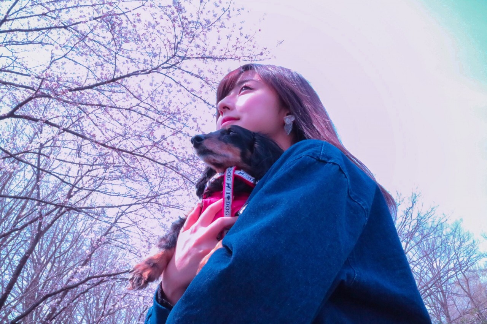
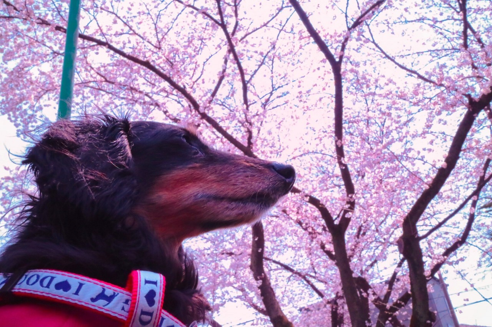

| 2017/04 06 Thu | 斎藤ちはる さくらと桜 |
ちはるーむへようこそ
今日はちはるーむを綺麗に掃除しました。
今日は新聞を読む日。
城の日。
(乃木坂46の日。)(欅坂46の日。)
新聞を読(4)む(6)日の語呂合わせ。
新聞の情報量って凄いよね
私も読まなきゃ！
城の日、復興のために姫路市が
日本三大名城の一つである姫路城を
中心とした市のために制定した。
姫路城小中学生くらいの頃に
行ったことがあるんだけど
真っ白なお城がとても素敵で
魅了された記憶があります。
20歳になった今、また行ってみたいな◎
乃木坂46と欅坂46の日は、
4と6の日だからと思い立ちましたっ
かと言って何もなかったんだけど(> <)
欅ちゃんは今日バースデーライブだったんだよね！お疲れ様です☺︎
先日、お母さんと愛犬さくらと一緒に
お花見に行ってきました！！
念願だった、さくらと桜ショットが
撮れましたヽ(；；)丿
さくらと桜とちはるもね。
#chihashot

さくらと桜とちはる。
下から撮ることによって
桜も空も写る！
桜の大きさも分かる。
淡いピンクの桜が可愛いです。
さくちゃんも可愛い。
#chihashot

さくらと桜。
横から撮るさくちゃんは
本当に凛々しくてかっこいい！
でもピンクが似合うところは
女の子らしくて可愛いな♡
この写真を撮っている時に、
「あ、私はさくらのためにカメラを始めたのかもしれない」って思ったの
さくちゃんとの一瞬一瞬の出来事や
楽しい日常生活などを
写真に、記憶に収めるために
カメラを始めたのかなって。
だからさくちゃんと一緒にいられる時間
沢山の思い出を残しておきたいの！
これからも良い写真待っていてね☺︎
------------------------------------------------♡
♬ ChihaMusic
「桜坂」福山雅治さん
今日は桜の歌にしようか
乃木の歌にしようか迷っていたら
ちょうど桜も坂も入った
大好きな曲を思い出しました＊
子供の頃から聞いていたから馴染み深い、
聞いていて落ち着く曲です。
桜の曲ってなんでこう切ない曲が多いのか。
そして素敵な曲ばかりなのか。
"君よずっと幸せに
風にそっと歌うよ"
優しくて強くてでも寂しい。良い。。
17th個別握手会、
9次応募が明日締め切りです( ¨̮ )
まだ残っているので、
少しでもお話ししたいよ〜！
ブログで書いていた話を詳しく聞きたいよ〜！
直接会ったらどんな感じなのかな？
と思っている方がいらっしゃいましたら
是非是非お越しください◎
握手会で皆さんとお話できるのが
大好きなので沢山の方に逢えるのを
楽しみにしています！
おやすみ
斎藤ちはる